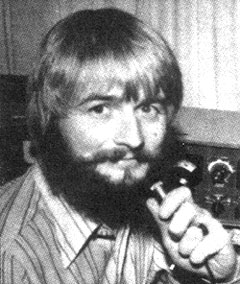

LEFT.' Simple line drawings can be transmitted via slow-scan TV RIGHT: And so can regular video images. This man's picture, for instance, was picked up by a conventional closed-circuit TV camera, converted to a slow-scan signal, tape-recorded on an audio cassette . . . and played back on Copthorne Macdonald's homemade SSTV monitor. (The photo represents an eight-second time exposure of the TV screen.)